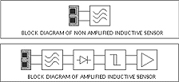
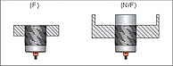
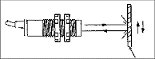
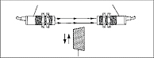
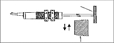

Products
We are providing a COMPLETE AUTOMATION SOLUTION
Details on Products
- All
- Inductive Proximity Switch
- Capacitive Proximity Switch
- Photoelectric Sensors
- Periphrial Relay Units
- Mark Sensor
- Textile Sensor
- Ultrasonic Sensor
- Rotary Encoder
- Application Selection Guide
Select product from here
Inductive Proximity Switch
Working Principle
By applying a voltage to the oscillator coil an alternating inductive field is created in front of the active surface of the unit. When a metallic object (steel, aluminium, copper, brass etc.) enters this field from any direction and the state of the oscillator is modified until thethreshold of the trigger is inverted this induces a change in the final stage and the subsequent command of an external load. The intervention distance depends on the type of metal and as described earlier, in the reduction factors. All the sensors are protected against in version of polarity and electrical disturbances of inductive sources and can be supplied with short circuit protection in the D.C. version. The main advantages offered by proximity sensors in relation to normal limit switches are mainly unlimited duration as they have no moving parts (wheels, springs etc.) lack of maintainance requirement and elimination of possible false contacts due to contact movement.
STANDARDIZED SENSING PLATE
The std. plate is square and has a thickness of 1 mm, the material of this plate must be steel (Fe37). Other materials mean that different intervention distances are obtained. The length of the sides of the plate must correspond to the diameter of a circle that is the active surface of the sensor. A larger plate does not result in an increase in the nominal intervention distance, however a reduction in the plate reduces the intervention distance.
APPLICATIONS
Inductive sensors have wide uses in many applications, even in the most difficult working conditions for example in the presence of oils, powders, liquids and vibrations which do not have any effect on their secure functioning. SARJAN sensors are mounted on machine tools, textile machines,transferline transport systems, packaging equipment, in the automobile industry and in all applications where solutions for automation are required.
ACTIVE FACE
The active face of proximity sensor is the surface from which emits an oscil- lating field where a metallic object (inductive) or any material (capacitive) results in a change of state of the sensor without entering in contact with it.
APPLICATIONS
Inductive sensors have wide uses in many applications, even in the most difficult working conditions for example in the presence of oils, powders, liquids and vibrations which do not have any effect on their secure functioning. SARJAN sensors are mounted on machine tools, textile machines,transferline transport systems, packaging equipment, in the automobile industry and in all applications where solutions for automation are required.
EMBEDDABLE (FLUSH MOUNTING) SENSORS (F)
The metal body covers the sensing area on all sides allows the unit to be installed in metal parts or next to other sensors without causing problems of reciprocal interference.
NOT EMBEDDABLE (NON FLUSH MOUNTING) SENSORS (N/F)
The metal body leaves uncovered part of the sensing area resulting in an increased sensing distance. During installation it is important to remember the minimum distances from metallic parts in the case of inductive units and from any type of material in the case of capacitive units. It is not possible to mount more than one sensor side by side.
NOMINAL INTERVENTION DISTANCE (Sn)
The nominal distance is defined as the switching value where variations due to Changes in temperature and voltage are taken into account.
REDUCTION FACTORS IN INDUCTIVE
If the object to be sensed is not Fe37 (inductives) the intervention distance Futhermore if the object to be sensed has dimension and thickness less than those indicated then the intervention distance will be further reduced.
INDUCTIVE SENSORS
Aq 37 1 x S Stainless steel 0.9 x Sn Brass-bronze 0.5 x Sn Aluminium 0.4 x Sn Copper 0.4 x Sn
SUGGESTIONS FOR MOUNTING
- Follow the indications listed in the technical characteristics for the various Families of sensors.
- Take note of the temperature limits indicated for each family of sensors. Incorrect installation may result in a modification in the switching distance Causing a change in equipment performance.
- When using sensors in areas where chemicals are present it is advised that It may be difficult to establish their corrosiveness. Generally speaking the plastic parts have a high resistance to oil, salts, petrol and other hydrocarbons. It Department.
- Do not pull the cable with excessive force and if necessary use protective Tubing.
- Do not pull the cable with excessive force and if necessary use protective Tubing.
- Install both inductive and capacitive sensors in such a way as to avoid that Any kind of material becomes deposited on the active surface.
- When installing sensor using locknuts do not overtighten them in order to Avoid damage to the body of the sensor and the internal circuit. Particular Attention should be given to sensors with a diameter equal to or less than 12 mm. Attention should all be given to avoid the installation of a sensor into a Hole with the same diameter as this may cause irreparable damage. is recommeded that further information be requested from our technical
SWITCHING DISTANCE (Sn)
This is the switching distance measured at 20°C and nominal supply voltage, using a square piece of Fe 37 (EN50010) steel of 1 mm. thickness the side of which must be equal to or greater than the diameter of the active surface. In this condition the sensor switches in a Sn range of "10% Sn.
DC Power Switch
AC Power Switch
Analogue Switch
Photoelectric Sensors
Automax photoelectric sensors can be divided into three basic types:
- Diffuse Beam
- Through Beam
- Retro-reflective
The use of these systems depends primarily on the application and the operating environment.
Diffuse Bean Type
Diffuse reflective sensors have the light source and receiver in the same head. The light emitted by the source is diffusely reflected by the detected object. A part of this reflection returns to the receiver and changes the switching status of the output when a certain intensity is exceeded. Thus the texture and colour of the object’s surface has a great effect on the detection (presence/absence) of objects.
Through Beam sensors
Through-beam sensors have the light source and receiver in separate heads. The light emitted by the source is analysed by the receiver. Interruption of the light path (caused by an object) is evaluated and results in switching of the output.
Retroreflective sensors
Diffuse - beam Photoelectric Sensors
Through - beam Photoelectric Sensors
Retroreflective Photoelectric Sensors